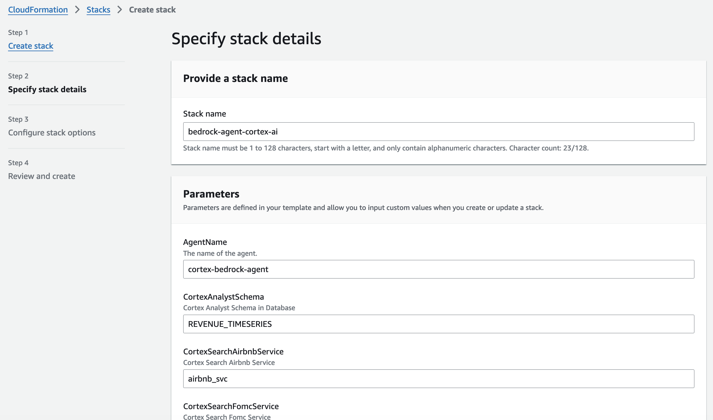
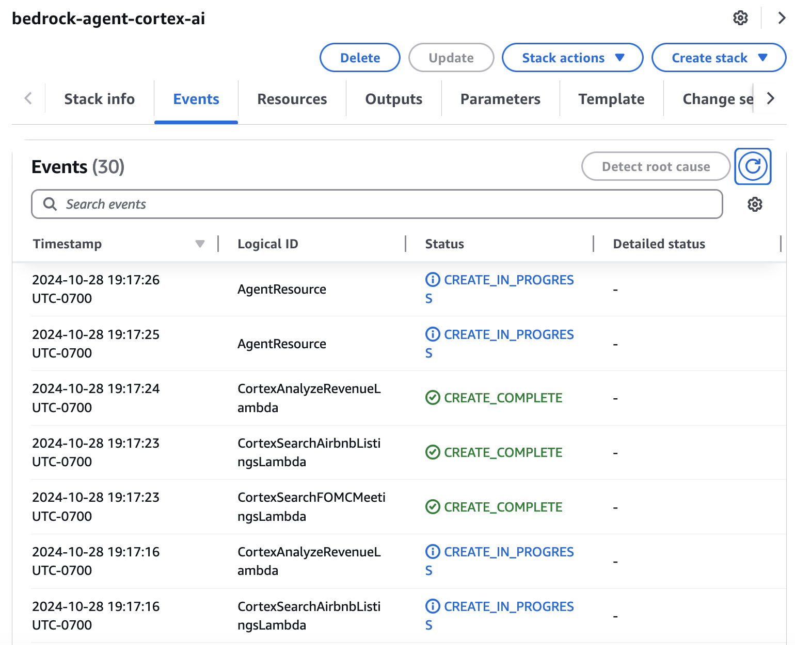
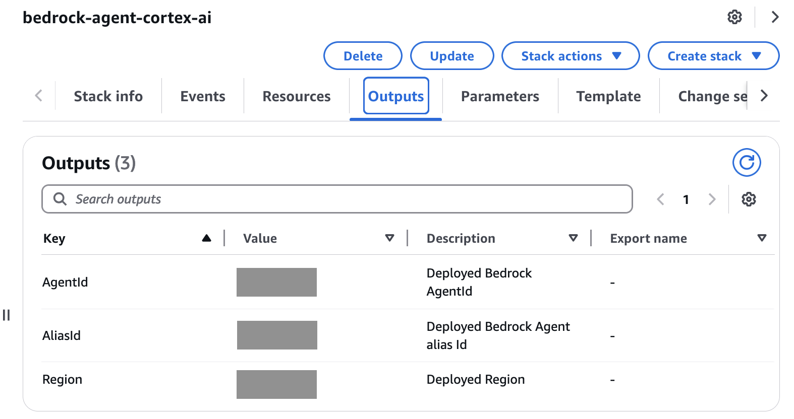

⏱️ Module Overview
Estimated time: 20 minutes
In this module, you'll deploy an Amazon Bedrock Agent that orchestrates Snowflake's Cortex tools to answer questions from both documents and structured data.
☁️ Amazon Bedrock Agent Setup
We'll deploy a Bedrock Agent using CloudFormation that includes:
- Bedrock Agent: AI orchestrator using Amazon Nova Pro model
- Lambda Functions: Action groups that call Snowflake Cortex
- Secrets Manager: Secure storage for Snowflake credentials
- IAM Roles: Permissions for cross-service access
Step 1: Prepare Lambda Layer for Snowflake Connector
The Lambda functions need the Snowflake Python connector. Follow these steps to prepare it:
- Download
snowflake_modules.zipfrom the workshop repository - Go to S3 in the AWS Management Console
- Create a new S3 bucket (or use an existing one). How to create an S3 bucket
- Create a folder named
snowflake_layerin your bucket - Upload
snowflake_modules.zipto thesnowflake_layerfolder - Note your bucket name - you'll need it for the CloudFormation parameters
snowflake_modules.zip contains the Snowflake Python connector and its dependencies,
allowing Lambda functions to connect to Snowflake.
Step 2: Deploy CloudFormation Stack
- In your AWS Console, navigate to CloudFormation
- Ensure you're in the
us-west-2(Oregon) region - Click Create stack → With new resources (standard)
- Select Upload a template file
- Download
aws/AWS-CortexAI.yamlfrom the workshop repository, then upload it - Click Next

CloudFormation stack configuration with Snowflake parameters
Step 3: Configure Stack Parameters
Fill in the following parameters:
| Parameter | Value | Description |
|---|---|---|
SnowflakeAccount |
Your account identifier | e.g., xy12345.us-west-2 |
SnowflakeUser |
Your username | The user you log in with (default: workshop_user) |
SnowflakePassword |
Your password | Stored securely in Secrets Manager |
LambdaLayerS3Bucket |
Your S3 bucket name | The bucket where you uploaded snowflake_modules.zip |
CortexSearchFomcService |
fomc_meeting |
Your Cortex Search service name for FOMC docs |
Keep the remaining parameters at their default values unless you customized your Snowflake setup:
SnowflakeDatabase: WORKSHOP_DBSnowflakeWarehouse: WORKSHOP_WHCortexAnalystSchema: REVENUE_TIMESERIESSemanticModelFile: revenue_timeseries.yamlAgentName: cortex-bedrock-agent
Step 4: Create the Stack
- Click Next on the Configure stack options page
- Scroll down and check the box: "I acknowledge that AWS CloudFormation might create IAM resources"
- Click Submit

CloudFormation stack creation in progress - Lambda functions and Agent resources being deployed
Step 5: Note the Outputs
Once complete, go to the Outputs tab and note these values:
- BedrockAgentId: The Agent ID (e.g.,
ABCD1234XY) - BedrockAgentAliasId: The Alias ID for the agent

CloudFormation Outputs tab showing AgentId, AliasId, and Region values
🔗 Connect Snowflake to Bedrock
Now we'll create a Snowflake function that can call your Bedrock Agent.
Step 1: Create External Access Integration
USE DATABASE WORKSHOP_DB;
USE SCHEMA AGENTS;
USE WAREHOUSE WORKSHOP_WH;
-- Create network rule to allow connections to Bedrock
CREATE OR REPLACE NETWORK RULE BEDROCK_NETWORK_RULE
MODE = EGRESS
TYPE = HOST_PORT
VALUE_LIST = ('bedrock-agent-runtime.us-west-2.amazonaws.com:443');
-- Create secret for AWS credentials
-- Replace with your AWS access keys (from IAM user or CloudFormation output)
CREATE OR REPLACE SECRET AWS_BEDROCK_CREDENTIALS
TYPE = GENERIC_STRING
SECRET_STRING = '{"access_key_id": "<YOUR_ACCESS_KEY>", "secret_access_key": "<YOUR_SECRET_KEY>"}';
-- Create the external access integration
CREATE OR REPLACE EXTERNAL ACCESS INTEGRATION BEDROCK_ACCESS_INTEGRATION
ALLOWED_NETWORK_RULES = (BEDROCK_NETWORK_RULE)
ALLOWED_AUTHENTICATION_SECRETS = (AWS_BEDROCK_CREDENTIALS)
ENABLED = TRUE;Step 2: Create the Bedrock Agent Function
-- Function to invoke Bedrock Agent from Snowflake
CREATE OR REPLACE FUNCTION INVOKE_BEDROCK_AGENT(
user_query VARCHAR,
session_id VARCHAR DEFAULT NULL
)
RETURNS VARIANT
LANGUAGE PYTHON
RUNTIME_VERSION = '3.11'
PACKAGES = ('boto3', 'snowflake-snowpark-python')
HANDLER = 'invoke_agent'
EXTERNAL_ACCESS_INTEGRATIONS = (BEDROCK_ACCESS_INTEGRATION)
SECRETS = ('cred' = AWS_BEDROCK_CREDENTIALS)
AS
$$
import boto3
import json
import _snowflake
import uuid
def invoke_agent(user_query, session_id):
# Get AWS credentials from Snowflake secret
creds = json.loads(_snowflake.get_generic_secret_string('cred'))
# Create Bedrock Agent Runtime client
client = boto3.client(
'bedrock-agent-runtime',
region_name='us-west-2',
aws_access_key_id=creds['access_key_id'],
aws_secret_access_key=creds['secret_access_key']
)
# Generate session ID if not provided (for conversation continuity)
if not session_id:
session_id = str(uuid.uuid4())
# TODO: Replace with your Agent ID and Alias ID from CloudFormation outputs
agent_id = 'YOUR_AGENT_ID'
agent_alias_id = 'YOUR_ALIAS_ID'
# Invoke the Bedrock Agent
response = client.invoke_agent(
agentId=agent_id,
agentAliasId=agent_alias_id,
sessionId=session_id,
inputText=user_query
)
# Collect streaming response
result_text = ""
for event in response['completion']:
if 'chunk' in event:
result_text += event['chunk']['bytes'].decode('utf-8')
return {"response": result_text, "session_id": session_id}
$$;YOUR_AGENT_ID and YOUR_ALIAS_ID
with the actual values from your CloudFormation stack outputs!
Step 3: Test the Integration
-- Test: Ask about FOMC documents (uses Cortex Search via Lambda)
SELECT INVOKE_BEDROCK_AGENT(
'What did the Federal Reserve say about inflation in recent meetings?'
) AS RESPONSE;
-- Test: Ask about revenue data (uses Cortex Analyst via Lambda)
SELECT INVOKE_BEDROCK_AGENT(
'What was our total revenue last month broken down by region?'
) AS RESPONSE;
-- Test: Combined question requiring both tools
SELECT INVOKE_BEDROCK_AGENT(
'Based on recent Fed policy, how might interest rate changes impact our revenue?'
) AS RESPONSE;🧪 Test Your Agent
Try these sample questions to see your Bedrock Agent in action:
| Question Type | Sample Question | Tool Used |
|---|---|---|
| Document Search | "What concerns did the Fed express about inflation?" | Cortex Search |
| Document Search | "How did the Fed view employment trends?" | Cortex Search |
| Data Query | "Show me revenue trends by product for Q4" | Cortex Analyst |
| Data Query | "Which region has the highest profit margin?" | Cortex Analyst |
| Combined | "How might Fed policy changes affect our sales?" | Both tools |
❄️ Alternative: Snowflake Cortex Agent Optional
If you prefer to keep everything within Snowflake (no external AWS access), you can use Snowflake Cortex Agents instead. This is ideal for environments with strict network policies or when you want simpler security.
USE DATABASE WORKSHOP_DB;
USE SCHEMA AGENTS;
-- Create native Cortex Agent (no external access needed)
CREATE OR REPLACE CORTEX AGENT WORKSHOP_AGENT
MODEL = 'amazon-nova-pro'
TOOLS = (
{
'name': 'fomc_search',
'type': 'cortex_search',
'description': 'Search FOMC meeting documents for Fed policy information.',
'service': 'WORKSHOP_DB.PUBLIC.FOMC_SEARCH_SERVICE'
},
{
'name': 'revenue_analyst',
'type': 'cortex_analyst',
'description': 'Query revenue and financial data.',
'semantic_view': 'WORKSHOP_DB.REVENUE_TIMESERIES.REVENUE_SEMANTIC_VIEW'
}
)
SYSTEM_PROMPT = $$You are a business analyst assistant that searches documents and analyzes data.$$;
-- Test the Cortex Agent
SELECT SNOWFLAKE.CORTEX.AGENT(
'WORKSHOP_DB.AGENTS.WORKSHOP_AGENT',
'What was revenue last month by region?'
) AS RESPONSE;When to use Cortex Agent instead of Bedrock:
- No external network access allowed
- Simpler setup (no CloudFormation/Lambda)
- Everything stays within Snowflake's security boundary
🎉 Module Complete!
You've successfully deployed an Amazon Bedrock Agent with:
- ✅ CloudFormation infrastructure (Agent, Lambda, Secrets)
- ✅ Snowflake External Access Integration
- ✅ Cross-cloud connectivity to Cortex tools
- ✅ Natural language interface to documents and data
In the next module, we'll build a user-friendly chat interface!